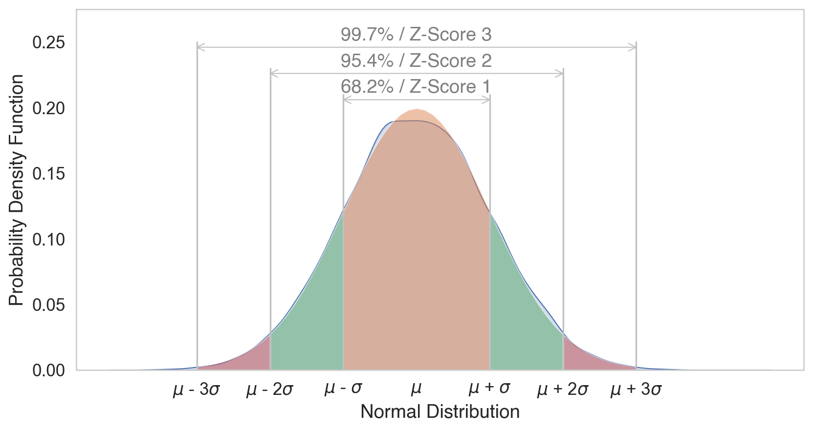

# Import all required libraries
import pandas as pd
import numpy as np
import seaborn as sns
import matplotlib.pyplot as plt
from sklearn.decomposition import PCA
from sklearn.manifold import TSNE
from sklearn.preprocessing import StandardScaler
from sklearn.impute import SimpleImputer
import statsmodels.api as sm
import scipy.stats as stats
from scipy.stats import gaussian_kde
from scipy.signal import find_peaks, argrelextrema
from scipy.stats import pearsonr
# Increase font size of all Seaborn plot elements
sns.set(font_scale = 1.25)
# Set Seaborn theme
sns.set_theme(style = "whitegrid")Data Preprocessing
Data Mining and Discovery
Setup
Data Preprocessing
Data preprocessing can refer to manipulation, filtration or augmentation of data before it is analyzed, and is often an important step in the data mining process.
Datasets
Human Freedom Index
The Human Freedom Index is a report that attempts to summarize the idea of “freedom” through variables for many countries around the globe.
Environmental Sustainability
Countries are given an overall sustainability score as well as scores in each of several different environmental areas.
Question
How does environmental stability correlate with human freedom indices in different countries, and what trends can be observed over recent years?
Dataset #1: Human Freedom Index
| year | ISO_code | countries | region | pf_rol_procedural | pf_rol_civil | pf_rol_criminal | pf_rol | pf_ss_homicide | pf_ss_disappearances_disap | ... | ef_regulation_business_bribes | ef_regulation_business_licensing | ef_regulation_business_compliance | ef_regulation_business | ef_regulation | ef_score | ef_rank | hf_score | hf_rank | hf_quartile | |
|---|---|---|---|---|---|---|---|---|---|---|---|---|---|---|---|---|---|---|---|---|---|
| 0 | 2016 | ALB | Albania | Eastern Europe | 6.661503 | 4.547244 | 4.666508 | 5.291752 | 8.920429 | 10.0 | ... | 4.050196 | 7.324582 | 7.074366 | 6.705863 | 6.906901 | 7.54 | 34.0 | 7.568140 | 48.0 | 2.0 |
| 1 | 2016 | DZA | Algeria | Middle East & North Africa | NaN | NaN | NaN | 3.819566 | 9.456254 | 10.0 | ... | 3.765515 | 8.523503 | 7.029528 | 5.676956 | 5.268992 | 4.99 | 159.0 | 5.135886 | 155.0 | 4.0 |
| 2 | 2016 | AGO | Angola | Sub-Saharan Africa | NaN | NaN | NaN | 3.451814 | 8.060260 | 5.0 | ... | 1.945540 | 8.096776 | 6.782923 | 4.930271 | 5.518500 | 5.17 | 155.0 | 5.640662 | 142.0 | 4.0 |
| 3 | 2016 | ARG | Argentina | Latin America & the Caribbean | 7.098483 | 5.791960 | 4.343930 | 5.744791 | 7.622974 | 10.0 | ... | 3.260044 | 5.253411 | 6.508295 | 5.535831 | 5.369019 | 4.84 | 160.0 | 6.469848 | 107.0 | 3.0 |
| 4 | 2016 | ARM | Armenia | Caucasus & Central Asia | NaN | NaN | NaN | 5.003205 | 8.808750 | 10.0 | ... | 4.575152 | 9.319612 | 6.491481 | 6.797530 | 7.378069 | 7.57 | 29.0 | 7.241402 | 57.0 | 2.0 |
5 rows × 123 columns
Understand the data
<class 'pandas.core.frame.DataFrame'>
RangeIndex: 1458 entries, 0 to 1457
Data columns (total 123 columns):
# Column Dtype
--- ------ -----
0 year int64
1 ISO_code object
2 countries object
3 region object
4 pf_rol_procedural float64
5 pf_rol_civil float64
6 pf_rol_criminal float64
7 pf_rol float64
8 pf_ss_homicide float64
9 pf_ss_disappearances_disap float64
10 pf_ss_disappearances_violent float64
11 pf_ss_disappearances_organized float64
12 pf_ss_disappearances_fatalities float64
13 pf_ss_disappearances_injuries float64
14 pf_ss_disappearances float64
15 pf_ss_women_fgm float64
16 pf_ss_women_missing float64
17 pf_ss_women_inheritance_widows float64
18 pf_ss_women_inheritance_daughters float64
19 pf_ss_women_inheritance float64
20 pf_ss_women float64
21 pf_ss float64
22 pf_movement_domestic float64
23 pf_movement_foreign float64
24 pf_movement_women float64
25 pf_movement float64
26 pf_religion_estop_establish float64
27 pf_religion_estop_operate float64
28 pf_religion_estop float64
29 pf_religion_harassment float64
30 pf_religion_restrictions float64
31 pf_religion float64
32 pf_association_association float64
33 pf_association_assembly float64
34 pf_association_political_establish float64
35 pf_association_political_operate float64
36 pf_association_political float64
37 pf_association_prof_establish float64
38 pf_association_prof_operate float64
39 pf_association_prof float64
40 pf_association_sport_establish float64
41 pf_association_sport_operate float64
42 pf_association_sport float64
43 pf_association float64
44 pf_expression_killed float64
45 pf_expression_jailed float64
46 pf_expression_influence float64
47 pf_expression_control float64
48 pf_expression_cable float64
49 pf_expression_newspapers float64
50 pf_expression_internet float64
51 pf_expression float64
52 pf_identity_legal float64
53 pf_identity_parental_marriage float64
54 pf_identity_parental_divorce float64
55 pf_identity_parental float64
56 pf_identity_sex_male float64
57 pf_identity_sex_female float64
58 pf_identity_sex float64
59 pf_identity_divorce float64
60 pf_identity float64
61 pf_score float64
62 pf_rank float64
63 ef_government_consumption float64
64 ef_government_transfers float64
65 ef_government_enterprises float64
66 ef_government_tax_income float64
67 ef_government_tax_payroll float64
68 ef_government_tax float64
69 ef_government float64
70 ef_legal_judicial float64
71 ef_legal_courts float64
72 ef_legal_protection float64
73 ef_legal_military float64
74 ef_legal_integrity float64
75 ef_legal_enforcement float64
76 ef_legal_restrictions float64
77 ef_legal_police float64
78 ef_legal_crime float64
79 ef_legal_gender float64
80 ef_legal float64
81 ef_money_growth float64
82 ef_money_sd float64
83 ef_money_inflation float64
84 ef_money_currency float64
85 ef_money float64
86 ef_trade_tariffs_revenue float64
87 ef_trade_tariffs_mean float64
88 ef_trade_tariffs_sd float64
89 ef_trade_tariffs float64
90 ef_trade_regulatory_nontariff float64
91 ef_trade_regulatory_compliance float64
92 ef_trade_regulatory float64
93 ef_trade_black float64
94 ef_trade_movement_foreign float64
95 ef_trade_movement_capital float64
96 ef_trade_movement_visit float64
97 ef_trade_movement float64
98 ef_trade float64
99 ef_regulation_credit_ownership float64
100 ef_regulation_credit_private float64
101 ef_regulation_credit_interest float64
102 ef_regulation_credit float64
103 ef_regulation_labor_minwage float64
104 ef_regulation_labor_firing float64
105 ef_regulation_labor_bargain float64
106 ef_regulation_labor_hours float64
107 ef_regulation_labor_dismissal float64
108 ef_regulation_labor_conscription float64
109 ef_regulation_labor float64
110 ef_regulation_business_adm float64
111 ef_regulation_business_bureaucracy float64
112 ef_regulation_business_start float64
113 ef_regulation_business_bribes float64
114 ef_regulation_business_licensing float64
115 ef_regulation_business_compliance float64
116 ef_regulation_business float64
117 ef_regulation float64
118 ef_score float64
119 ef_rank float64
120 hf_score float64
121 hf_rank float64
122 hf_quartile float64
dtypes: float64(119), int64(1), object(3)
memory usage: 1.4+ MB| year | pf_rol_procedural | pf_rol_civil | pf_rol_criminal | pf_rol | pf_ss_homicide | pf_ss_disappearances_disap | pf_ss_disappearances_violent | pf_ss_disappearances_organized | pf_ss_disappearances_fatalities | ... | ef_regulation_business_bribes | ef_regulation_business_licensing | ef_regulation_business_compliance | ef_regulation_business | ef_regulation | ef_score | ef_rank | hf_score | hf_rank | hf_quartile | |
|---|---|---|---|---|---|---|---|---|---|---|---|---|---|---|---|---|---|---|---|---|---|
| count | 1458.000000 | 880.000000 | 880.000000 | 880.000000 | 1378.000000 | 1378.000000 | 1369.000000 | 1378.000000 | 1279.000000 | 1378.000000 | ... | 1283.000000 | 1357.000000 | 1368.000000 | 1374.000000 | 1378.000000 | 1378.000000 | 1378.000000 | 1378.000000 | 1378.000000 | 1378.000000 |
| mean | 2012.000000 | 5.589355 | 5.474770 | 5.044070 | 5.309641 | 7.412980 | 8.341855 | 9.519458 | 6.772869 | 9.584972 | ... | 4.886192 | 7.698494 | 6.981858 | 6.317668 | 7.019782 | 6.785610 | 76.973149 | 6.993444 | 77.007983 | 2.490566 |
| std | 2.582875 | 2.080957 | 1.428494 | 1.724886 | 1.529310 | 2.832947 | 3.225902 | 1.744673 | 2.768983 | 1.559826 | ... | 1.889168 | 1.728507 | 1.979200 | 1.230988 | 1.027625 | 0.883601 | 44.540142 | 1.025811 | 44.506549 | 1.119698 |
| min | 2008.000000 | 0.000000 | 0.000000 | 0.000000 | 0.000000 | 0.000000 | 0.000000 | 0.000000 | 0.000000 | 0.000000 | ... | 0.000000 | 0.000000 | 0.000000 | 2.009841 | 2.483540 | 2.880000 | 1.000000 | 3.765827 | 1.000000 | 1.000000 |
| 25% | 2010.000000 | 4.133333 | 4.549550 | 3.789724 | 4.131746 | 6.386978 | 10.000000 | 10.000000 | 5.000000 | 9.942607 | ... | 3.433786 | 6.874687 | 6.368178 | 5.591851 | 6.429498 | 6.250000 | 38.000000 | 6.336685 | 39.000000 | 1.000000 |
| 50% | 2012.000000 | 5.300000 | 5.300000 | 4.575189 | 4.910797 | 8.638278 | 10.000000 | 10.000000 | 7.500000 | 10.000000 | ... | 4.418371 | 8.074161 | 7.466692 | 6.265234 | 7.082075 | 6.900000 | 77.000000 | 6.923840 | 76.000000 | 2.000000 |
| 75% | 2014.000000 | 7.389499 | 6.410975 | 6.400000 | 6.513178 | 9.454402 | 10.000000 | 10.000000 | 10.000000 | 10.000000 | ... | 6.227978 | 8.991882 | 8.209310 | 7.139718 | 7.720955 | 7.410000 | 115.000000 | 7.894660 | 115.000000 | 3.000000 |
| max | 2016.000000 | 9.700000 | 8.773533 | 8.719848 | 8.723094 | 9.926568 | 10.000000 | 10.000000 | 10.000000 | 10.000000 | ... | 9.623811 | 9.999638 | 9.865488 | 9.272600 | 9.439828 | 9.190000 | 162.000000 | 9.126313 | 162.000000 | 4.000000 |
8 rows × 120 columns
Identifying missing values
year 0
ISO_code 0
countries 0
region 0
pf_rol_procedural 578
...
ef_score 80
ef_rank 80
hf_score 80
hf_rank 80
hf_quartile 80
Length: 123, dtype: int64A lot of missing values üôÉ
Data Cleaning
Handling missing data
Options
- Do nothing…
- Remove them
- Imputate
We will be using pf_score from hsi: 80 missing values
Imputation
In statistics, imputation is the process of replacing missing data with substituted values.
Considerations
- Data distribution
- Impact on analysis
- Missing data mechanism
- Multiple imputation
- Can also be used on outliers
Mean imputation
How it Works: Replace missing values with the arithmetic mean of the non-missing values in the same variable.
Pros:
- Easy and fast.
- Works well with small numerical datasets
Cons:
- It only works on the column level.
- Will give poor results on encoded categorical features.
- Not very accurate.
- Doesn’t account for the uncertainty in the imputations.
hfi_copy = hfi
mean_imputer = SimpleImputer(strategy = 'mean')
hfi_copy['mean_pf_score'] = mean_imputer.fit_transform(hfi_copy[['pf_score']])
mean_plot = sns.kdeplot(data = hfi_copy, x = 'pf_score', linewidth = 2, label = "Original")
mean_plot = sns.kdeplot(data = hfi_copy, x = 'mean_pf_score', linewidth = 2, label = "Mean Imputated")
plt.legend()
plt.show()Median imputation
How it Works: Replace missing values with the median of the non-missing values in the same variable.
Pros (same as mean):
- Easy and fast.
- Works well with small numerical datasets
Cons (same as mean):
- It only works on the column level.
- Will give poor results on encoded categorical features.
- Not very accurate.
- Doesn’t account for the uncertainty in the imputations.
median_imputer = SimpleImputer(strategy = 'median')
hfi_copy['median_pf_score'] = median_imputer.fit_transform(hfi_copy[['pf_score']])
median_plot = sns.kdeplot(data = hfi_copy, x = 'pf_score', linewidth = 2, label = "Original")
median_plot = sns.kdeplot(data = hfi_copy, x = 'median_pf_score', linewidth = 2, label = "Median Imputated")
plt.legend()
plt.show()Mode imputation
How it Works: Replace missing values with the mode of the non-missing values in the same variable.
Pros:
- Easy and fast.
- Works well with categorical features.
Cons:
- It also doesn’t factor the correlations between features.
- It can introduce bias in the data.
mode_imputer = SimpleImputer(strategy = 'most_frequent')
hfi_copy['mode_pf_score'] = mode_imputer.fit_transform(hfi_copy[['pf_score']])
mode_plot = sns.kdeplot(data = hfi_copy, x = 'pf_score', linewidth = 2, label = "Original")
mode_plot = sns.kdeplot(data = hfi_copy, x = 'mode_pf_score', linewidth = 2, label = "Mode Imputated")
plt.legend()
plt.show()Capping (Winsorizing) imputation
How it Works: Removing extreme values, or outliers based on cut-offs
Pros:
- Not influenced by extreme values
Cons:
- Capping only modifies the smallest and largest values slightly.
- If no extreme outliers are present, Winsorization may be unnecessary.
upper_limit = np.percentile(hfi_copy['pf_score'].dropna(), 95)
lower_limit = np.percentile(hfi_copy['pf_score'].dropna(), 5)
hfi_copy['capped_pf_score'] = np.clip(hfi_copy['pf_score'], lower_limit, upper_limit)
cap_plot = sns.kdeplot(data = hfi_copy, x = 'pf_score', linewidth = 2, label = "Original")
cap_plot = sns.kdeplot(data = hfi_copy, x = 'capped_pf_score', linewidth = 2, label = "Mode Imputated")
plt.legend()
plt.show()Other Imputation Methods
Data type conversion
| year | ISO_code | countries | region | pf_rol_procedural | pf_rol_civil | pf_rol_criminal | pf_rol | pf_ss_homicide | pf_ss_disappearances_disap | ... | ef_regulation | ef_score | ef_rank | hf_score | hf_rank | hf_quartile | mean_pf_score | median_pf_score | mode_pf_score | capped_pf_score | |
|---|---|---|---|---|---|---|---|---|---|---|---|---|---|---|---|---|---|---|---|---|---|
| 0 | 2016-01-01 | ALB | Albania | Eastern Europe | 6.661503 | 4.547244 | 4.666508 | 5.291752 | 8.920429 | 10.0 | ... | 6.906901 | 7.54 | 34.0 | 7.56814 | 48.0 | 2.0 | 7.596281 | 7.596281 | 7.596281 | 7.596281 |
1 rows × 127 columns
Removing duplicates
<class 'pandas.core.frame.DataFrame'>
RangeIndex: 1458 entries, 0 to 1457
Columns: 127 entries, year to capped_pf_score
dtypes: datetime64[ns](1), float64(123), object(3)
memory usage: 1.4+ MB<class 'pandas.core.frame.DataFrame'>
RangeIndex: 1458 entries, 0 to 1457
Columns: 127 entries, year to capped_pf_score
dtypes: datetime64[ns](1), float64(123), object(3)
memory usage: 1.4+ MBNo duplicates! üòä
Filtering data
Let’s look at USA, India, Canada, China
Let’s look at Economic Freedom > 75
Transformations
Normalizing
Mean: 5
Standard Deviation: 2
hfi_copy = hfi
scaler = StandardScaler()
hfi_copy[['ef_score_scale', 'pf_score_scale']] = scaler.fit_transform(hfi_copy[['ef_score', 'pf_score']])
hfi_copy[['ef_score_scale', 'pf_score_scale']].describe()| ef_score_scale | pf_score_scale | |
|---|---|---|
| count | 1.378000e+03 | 1.378000e+03 |
| mean | 4.524683e-16 | 2.062533e-17 |
| std | 1.000363e+00 | 1.000363e+00 |
| min | -4.421711e+00 | -3.663087e+00 |
| 25% | -6.063870e-01 | -7.303950e-01 |
| 50% | 1.295064e-01 | -8.926277e-03 |
| 75% | 7.068997e-01 | 9.081441e-01 |
| max | 2.722116e+00 | 1.722056e+00 |
Normality test: Q-Q plot
Code
hfi_clean = hfi_copy.dropna(subset = ['pf_score'])
sns.set_style("white")
fig, (ax1, ax2) = plt.subplots(ncols = 2, nrows = 1)
sns.kdeplot(data = hfi_clean, x = "pf_score", linewidth = 5, ax = ax1)
ax1.set_title('Personal Freedom Score')
sm.qqplot(hfi_clean['pf_score'], line = 's', ax = ax2, dist = stats.norm, fit = True)
ax2.set_title('Personal Freedom Score Q-Q plot')
plt.tight_layout()
plt.show()There were some issues in our plots:
Left Tail: Points deviate downwards from the line, indicating more extreme low values than a normal distribution (negative skewness).
Central Section: Points align closely with the line, suggesting the central data is similar to a normal distribution.
Right Tail: Points curve upwards, showing potential for extreme high values (positive skewness).
Correcting skew
Square-root transformation. \(\sqrt x\) Used for moderately right-skew (positive skew)
- Cannot handle negative values (but can handle zeros)
Log transformation. \(log(x + 1)\) Used for substantial right-skew (positive skew)
- Cannot handle negative or zero values
Inverse transformation. \(\frac{1}{x}\) Used for severe right-skew (positive skew)
- Cannot handle negative or zero values
Squared transformation. \(x^2\) Used for moderately left-skew (negative skew)
- Effective when lower values are densely packed together
Cubed transformation. \(x^3\) Used for severely left-skew (negative skew)
- Further stretches the tail of the distribution
Comparing transformations

Moderate negative skew, no zeros or negative values
Code
hfi_clean['pf_score_sqrt'] = np.sqrt(hfi_clean['pf_score'])
col = hfi_clean['pf_score_sqrt']
fig, (ax1, ax2) = plt.subplots(ncols = 2, nrows = 1)
sns.kdeplot(col, linewidth = 5, ax = ax1)
ax1.set_title('Square-root Density plot')
sm.qqplot(col, line = 's', ax = ax2)
ax2.set_title('Square-root Q-Q plot')
plt.tight_layout()
plt.show()Code
hfi_clean['pf_score_log'] = np.log(hfi_clean['pf_score'] + 1)
col = hfi_clean['pf_score_log']
fig, (ax1, ax2) = plt.subplots(ncols = 2, nrows = 1)
sns.kdeplot(col, linewidth = 5, ax = ax1)
ax1.set_title('Log Density plot')
sm.qqplot(col, line = 's', ax = ax2)
ax2.set_title('Log Q-Q plot')
plt.tight_layout()
plt.show()Code
hfi_clean['pf_score_inv'] = 1/hfi_clean.pf_score
col = hfi_clean['pf_score_inv']
fig, (ax1, ax2) = plt.subplots(ncols = 2, nrows = 1)
sns.kdeplot(col, linewidth = 5, ax = ax1)
ax1.set_title('Inverse Density plot')
sm.qqplot(col, line = 's', ax = ax2)
ax2.set_title('Inverse Q-Q plot')
plt.tight_layout()
plt.show()Code
hfi_clean['pf_score_square'] = pow(hfi_clean.pf_score, 2)
col = hfi_clean['pf_score_square']
fig, (ax1, ax2) = plt.subplots(ncols = 2, nrows = 1)
sns.kdeplot(col, linewidth = 5, ax = ax1)
ax1.set_title('Squared Density plot')
sm.qqplot(col, line = 's', ax = ax2)
ax2.set_title('Squared Q-Q plot')
plt.tight_layout()
plt.show()Code
hfi_clean['pf_score_cube'] = pow(hfi_clean.pf_score, 3)
col = hfi_clean['pf_score_cube']
fig, (ax1, ax2) = plt.subplots(ncols = 2, nrows = 1)
sns.kdeplot(col, linewidth = 5, ax = ax1)
ax1.set_title('Cubed Density plot')
sm.qqplot(col, line = 's', ax = ax2)
ax2.set_title('Cubed Q-Q plot')
plt.tight_layout()
plt.show()What did we learn?
Negative skew excluded all but Squared and Cubed transformations
Squared transformation was the best
The data is bimodal, so no transformation is perfect
Dealing with multimodality
K-Means Clustering
- We will learn this later
Gaussian Mixture Models
- Also later
Thresholding
- No obvious valley
Domain knowledge
- None that is applicable
Kernel Density Estimation (KDE)
Finding valleys in multimodal data, then splitting
\[\hat{f}(x) = \frac{1}{n h} \sum_{i=1}^{n} K\left(\frac{x - x_i}{h}\right)\]
\(\hat{f}(x)\) is the estimated probability density function at point \(x\).
\(n\) is the number of data points.
\(x_i\) are the observed data points.
\(h\) is the bandwidth.
\(K\) is the kernel function, which is a non-negative function that integrates to one and is symmetric around zero.
The choice of \(h\) and \(K\) can significantly affect the resulting estimate.
Common choices for the kernel function \(K\) include the Gaussian kernel and Epanechnikov kernel
KDE: bandwidth method
In density estimations, there is a smoothing parameter
Scott’s Rule
- Rule of thumb for choosing kernal bandwidth
- Proportional to the standard deviation of the data and inversely proportional to the cube root of the sample size (n).
- Formula: \(h = \sigma \cdot n^{-\frac{1}{3}}\)
- Tends to produce a smoother density estimation
- Suitable for data that is roughly normally distributed
Silverman’s Rule
- Another popular rule of thumb
- Similar to Scott’s rule but potentially leading to a smaller bandwidth.
- Formula: \(h = \left( \frac{4\hat{\sigma}^5}{3n} \right)^{\frac{1}{5}}\)
- Can be better for data with outliers or heavy tails
KDE: our data
Code
values = hfi_clean['pf_score_square']
kde = gaussian_kde(values, bw_method = 'scott')
x_eval = np.linspace(values.min(), values.max(), num = 500)
kde_values = kde(x_eval)
minima_indices = argrelextrema(kde_values, np.less)[0]
valleys = x_eval[minima_indices]
plt.figure(figsize = (7, 5))
plt.title('KDE and Valleys')
sns.lineplot(x = x_eval, y = kde_values, label = 'KDE')
plt.scatter(x = valleys, y = kde(valleys), color = 'r', zorder = 5, label = 'Valleys')
plt.legend()
plt.show()
print("Valley x-values:", valleys)Valley x-values: [68.39968248]Split the data
valley = 68.39968248
hfi_clean['group'] = np.where(hfi_clean['pf_score_square'] < valley, 'group1', 'group2')
data = hfi_clean[['group', 'pf_score_square']].sort_values(by = 'pf_score_square')
data.head()| group | pf_score_square | |
|---|---|---|
| 159 | group1 | 4.693962 |
| 321 | group1 | 5.461029 |
| 141 | group1 | 6.308405 |
| 483 | group1 | 6.345709 |
| 303 | group1 | 8.189057 |
Plot the grouped data
Dimensional reduction
Dimension reduction, is the transformation of data from a high-dimensional space into a low-dimensional space so that the low-dimensional representation retains some meaningful properties of the original data, ideally close to its intrinsic dimension.
Principal component analysis (PCA) - Unsupervised
Maximizes variance in the dataset.
Finds orthogonal principal components.
Useful for feature extraction and data visualization.
t-Distributed Stochastic Neighbor Embedding (t-SNE) - Unsupervised
Preserves local structures and relationships
Maximizes the ratio of between-class variance to within-class variance.
Stochastic and iterative process (probabilistic), iteratively minimizing the divergence between distributions
Ideal for complex data visualization
Dimensional reduction: applied
numeric_cols = hfi.select_dtypes(include = [np.number]).columns
# Applying mean imputation only to numeric columns
hfi[numeric_cols] = hfi[numeric_cols].fillna(hfi[numeric_cols].mean())
features = ['pf_rol_procedural', 'pf_rol_civil', 'pf_rol_criminal', 'pf_rol', 'hf_score', 'hf_rank', 'hf_quartile']
x = hfi.loc[:, features].values
y = hfi.loc[:, 'region'].values
x = StandardScaler().fit_transform(x)Code
pca = PCA(n_components = 2)
principalComponents = pca.fit_transform(x)
principalDf = pd.DataFrame(data = principalComponents, columns = ['principal component 1', 'principal component 2'])
pca_variance_explained = pca.explained_variance_ratio_
print("Variance explained:", pca_variance_explained, "\n", principalDf)Variance explained: [0.76138995 0.15849799]
principal component 1 principal component 2
0 5.164625e-01 -9.665680e-01
1 -2.366765e+00 1.957381e+00
2 -2.147729e+00 1.664483e+00
3 -2.784437e-01 8.066415e-01
4 3.716205e-01 -4.294282e-01
... ... ...
1453 -4.181375e+00 -4.496988e-01
1454 -5.213024e-01 6.010449e-01
1455 1.374342e-16 -2.907121e-16
1456 -1.545577e+00 -5.422255e-01
1457 -3.669011e+00 4.294948e-01
[1458 rows x 2 columns]Code
# Combining the scatterplot of principal components with the scree plot using the correct column names
fig, axes = plt.subplots(nrows = 1, ncols = 2, figsize = (12, 5))
# Scatterplot of Principal Components
axes[0].scatter(principalDf['principal component 1'], principalDf['principal component 2'])
for i in range(len(pca.components_)):
axes[0].arrow(0, 0, pca.components_[i, 0], pca.components_[i, 1], head_width = 0.1, head_length = 0.15, fc = 'r', ec = 'r', linewidth = 2)
axes[0].text(pca.components_[i, 0] * 1.2, pca.components_[i, 1] * 1.2, f'Eigenvector {i+1}', color = 'r', fontsize = 12)
axes[0].set_xlabel('Principal Component 1')
axes[0].set_ylabel('Principal Component 2')
axes[0].set_title('Scatterplot of Principal Components with Eigenvectors')
axes[0].grid()
# Scree Plot for PCA
axes[1].bar(range(1, len(pca_variance_explained) + 1), pca_variance_explained, alpha = 0.6, color = 'g', label = 'Individual Explained Variance')
axes[1].set_ylabel('Explained variance ratio')
axes[1].set_xlabel('Principal components')
axes[1].set_title('Scree Plot for PCA')
axes[1].legend(loc='best')
plt.tight_layout()
plt.show()Code
| tsne-2d-one | tsne-2d-two | |
|---|---|---|
| 0 | 8.723544 | -30.771170 |
| 1 | -28.243269 | 35.372395 |
| 2 | -34.433094 | 34.752293 |
| 3 | -6.945469 | 15.958995 |
| 4 | 6.562296 | -19.255369 |
| ... | ... | ... |
| 1453 | -55.390907 | -8.568928 |
| 1454 | -12.814189 | 12.753754 |
| 1455 | 11.118634 | 7.232168 |
| 1456 | -19.679014 | -8.271861 |
| 1457 | -54.577549 | -2.688204 |
1458 rows × 2 columns
Code
tsne_df['region'] = y
plt.figure(figsize = (7, 5))
plt.scatter(tsne_df['tsne-2d-one'], tsne_df['tsne-2d-two'], c = pd.factorize(tsne_df['region'])[0], alpha=0.5)
plt.colorbar(ticks = range(len(np.unique(y))))
plt.xlabel('TSNE Dimension 1')
plt.ylabel('TSNE Dimension 2')
plt.title('t-SNE Results with Region Color Coding')
plt.show()Dimensional reduction: what now?
Feature Selection: Choose the most informative components.
Visualization: Graph the reduced dimensions to identify patterns.
Clustering: Group similar data points using clustering algorithms.
Classification: Predict categories using classifiers on reduced features.
Model Evaluation: Assess model performance with metrics like accuracy.
Cross-Validation: Validate model stability with cross-validation.
Hyperparameter Tuning: Optimize model settings for better performance.
Model Interpretation: Understand feature influence in the models.
Ensemble Methods: Improve predictions by combining multiple models.
Deployment: Deploy the model for real-world predictions.
Iterative Refinement: Refine analysis based on initial results.
Reporting: Summarize findings for stakeholders.
Back to our question
Question
How does environmental stability correlate with human freedom indices in different countries, and what trends can be observed over recent years?
We can use the
pf_scorefrom thehfidataset that we’ve been using.…but we need an environmental stability index score.
Dataset #2: Environmental Stability
| code | country | esi | system | stress | vulner | cap | global | sys_air | sys_bio | ... | vul_hea | vul_sus | vul_dis | cap_gov | cap_eff | cap_pri | cap_st | glo_col | glo_ghg | glo_tbp | |
|---|---|---|---|---|---|---|---|---|---|---|---|---|---|---|---|---|---|---|---|---|---|
| 0 | ALB | Albania | 58.8 | 52.4 | 65.4 | 72.3 | 46.2 | 57.9 | 0.45 | 0.17 | ... | 0.32 | 0.79 | 0.66 | -0.32 | 0.79 | -0.65 | -0.20 | -0.45 | 0.21 | 0.84 |
| 1 | DZA | Algeria | 46.0 | 43.1 | 66.3 | 57.5 | 31.8 | 21.1 | -0.02 | -0.08 | ... | -0.33 | 0.45 | 0.45 | -0.69 | -0.28 | -0.66 | -0.27 | -0.51 | -0.56 | -1.33 |
| 2 | AGO | Angola | 42.9 | 67.9 | 59.1 | 11.8 | 22.1 | 39.1 | -0.77 | 0.77 | ... | -1.75 | -1.91 | 0.11 | -0.96 | 0.12 | -1.08 | -1.16 | -0.88 | 0.31 | -0.26 |
| 3 | ARG | Argentina | 62.7 | 67.6 | 54.9 | 69.9 | 65.4 | 58.5 | 0.40 | 0.10 | ... | 0.85 | 0.69 | 0.03 | -0.34 | 0.18 | 1.23 | 0.51 | 0.45 | 0.09 | 0.11 |
| 4 | ARM | Armenia | 53.2 | 54.4 | 62.2 | 50.8 | 34.9 | 60.3 | 1.21 | -0.02 | ... | 0.29 | -0.79 | 0.56 | -0.38 | -0.66 | -0.55 | 0.03 | -0.29 | -0.29 | 1.37 |
5 rows × 29 columns
Looks like the
esicolumn will work!But there’s a problem…
We only have one year in this dataset
P.S. there’s no missing values
Grouping and aggregating
grouped_hfi = hfi.groupby('countries').agg({'region': 'first',
'pf_score': 'mean'
}).reset_index()
grouped_hfi.head()| countries | region | pf_score | |
|---|---|---|---|
| 0 | Albania | Eastern Europe | 7.696934 |
| 1 | Algeria | Middle East & North Africa | 5.249383 |
| 2 | Angola | Sub-Saharan Africa | 5.856932 |
| 3 | Argentina | Latin America & the Caribbean | 8.120779 |
| 4 | Armenia | Caucasus & Central Asia | 7.192095 |
Joining the data
grouped_hfi['country'] = grouped_hfi['countries']
merged_data = esi.merge(grouped_hfi, how = 'left', on = 'country')
esi_hfi = merged_data[['esi', 'pf_score', 'region', 'country']]
esi_hfi.head()| esi | pf_score | region | country | |
|---|---|---|---|---|
| 0 | 58.8 | 7.696934 | Eastern Europe | Albania |
| 1 | 46.0 | 5.249383 | Middle East & North Africa | Algeria |
| 2 | 42.9 | 5.856932 | Sub-Saharan Africa | Angola |
| 3 | 62.7 | 8.120779 | Latin America & the Caribbean | Argentina |
| 4 | 53.2 | 7.192095 | Caucasus & Central Asia | Armenia |
…but what’s the new problem?
We need to standardize the data.
Lucky for us this will also help control outliers!
Back to missing values
We are going to drop them, since they are also present in region
Transformations
Normality test: Q-Q plot
Code
sns.set_style("white")
fig, (ax1, ax2) = plt.subplots(ncols = 2, nrows = 1)
sns.kdeplot(data = esi_hfi_red, x = "pf_score", linewidth = 5, ax = ax1)
ax1.set_title('Personal Freedom Score')
sm.qqplot(esi_hfi_red['pf_score'], line = 's', ax = ax2, dist = stats.norm, fit = True)
ax2.set_title('Personal Freedom Score Q-Q plot')
plt.tight_layout()
plt.show()Code
fig, (ax1, ax2) = plt.subplots(ncols = 2, nrows = 1)
sns.kdeplot(data = esi_hfi_red, x = "esi", linewidth = 5, ax = ax1)
ax1.set_title('Environmental Stability Score')
sm.qqplot(esi_hfi_red['esi'], line = 's', ax = ax2, dist = stats.norm, fit = True)
ax2.set_title('Environmental Stability Score Q-Q plot')
plt.tight_layout()
plt.show()Correcting skew
Code
esi_hfi_red['pf_score_square'] = pow(esi_hfi_red.pf_score, 2)
col = esi_hfi_red['pf_score_square']
fig, (ax1, ax2) = plt.subplots(ncols = 2, nrows = 1)
sns.kdeplot(col, linewidth = 5, ax = ax1)
ax1.set_title('Squared Density plot')
sm.qqplot(col, line = 's', ax = ax2)
ax2.set_title('Squared Q-Q plot')
plt.tight_layout()
plt.show()Code
esi_hfi_red['esi_log'] = np.log(esi_hfi_red.esi + 1)
col = esi_hfi_red['esi_log']
fig, (ax1, ax2) = plt.subplots(ncols = 2, nrows = 1)
sns.kdeplot(col, linewidth = 5, ax = ax1)
ax1.set_title('Log Density plot')
sm.qqplot(col, line = 's', ax = ax2)
ax2.set_title('Log Q-Q plot')
plt.tight_layout()
plt.show()Normalizing
scaler = StandardScaler()
esi_hfi_red[['esi_log', 'pf_score_square']] = scaler.fit_transform(esi_hfi_red[['esi_log', 'pf_score_square']])
esi_hfi_red.describe().round(3)| esi | pf_score | pf_score_square | esi_log | |
|---|---|---|---|---|
| count | 129.000 | 129.000 | 129.000 | 129.000 |
| mean | 50.599 | 7.210 | 0.000 | 0.000 |
| std | 8.304 | 1.291 | 1.004 | 1.004 |
| min | 32.700 | 4.203 | -1.916 | -2.604 |
| 25% | 44.800 | 6.207 | -0.805 | -0.671 |
| 50% | 50.000 | 7.074 | -0.191 | 0.006 |
| 75% | 56.100 | 8.415 | 0.915 | 0.718 |
| max | 75.100 | 9.476 | 1.927 | 2.527 |
Correlations
| esi | pf_score | pf_score_square | esi_log | |
|---|---|---|---|---|
| esi | 1.000000 | 0.574756 | 0.583615 | 0.993689 |
| pf_score | 0.574756 | 1.000000 | 0.995631 | 0.560831 |
| pf_score_square | 0.583615 | 0.995631 | 1.000000 | 0.566744 |
| esi_log | 0.993689 | 0.560831 | 0.566744 | 1.000000 |
Code
plt.figure(figsize = (7, 5))
ax = sns.scatterplot(data = esi_hfi_red, x = "pf_score_square", y = "esi_log",
hue = "region", palette = "colorblind")
ax.legend(title = "Region",
bbox_to_anchor = (1.02, 1), loc = 'upper left', borderaxespad = 0)
ax.set(xlabel = "Personal Freedom Log-Normal ")
ax.set(ylabel = "Environmental Stability Squared-Normal")
ax.set(title = "Human Freedom Index vs. Environmental Stability")
plt.show()Correlations: p-value
Conclusions: question
How does environmental stability correlate with human freedom indices in different countries, and what trends can be observed over recent years?
- We can’t make inferences about recent years…
- Moderate positive correlation between human freedom index and environmental stability
- We cannot find a relationship between countries either
- We need a linear regression next (later)
Conclusions: data preprocessing
There are multiple steps:
Check the distribution for normality
Likely will need a transformation based on the severity and direction of skew
Normalize the data with different units
Correlations are a good start, but regressions are more definitive
It’s “as needed”, ergo we didn’t cover everything…